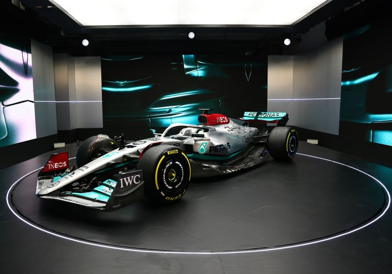
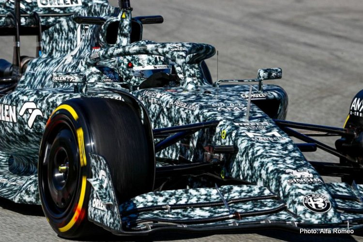

Alpine muestra fiabilidad en los test de pretemporada.
Fecha de lanzamiento: 21/2/2022.
A pesar de que el Alpine de Fernando Alonso estrenaba motor este fue el segundo piloto en dar más vueltas al circuito de Montmelo, circuit de Catalunya, en el primer día de test.
Alonso fue el encargado de hacer debutar en su circuito de casa el nuevo monoplaza, que tenía mucho en juego por delante. No se trataba únicamente de probar por primera vez
en pista su concepto del nuevo reglamento de 2022, sino también de testear el nuevo motor nacido en la fábrica de Viry-Châtillon el cual supone la primera innovación de Alpine
en el apartado
de la unidad de potencia desde 2019.
A pesar de que las sensaciones no fueron malas desde el comienzo, la sesión matinal no estuvo exenta de sobresaltos. El bicampeón del mundo tardó en encarar la pista con regularidad
debido a un problema relacionado con el DRS, que finalmente no pudieron solucionar del todo de cara al entrenamiento vespertino. Pero, a pesar de la coyuntura, ni Alonso ni el Alpine
desfallecieron.
El asturiano afrontó la tarde de Barcelona con muchas ganas de rodar para demostrar la fiabilidad del coche nuevo y no falló en el intento. Dio y dio vueltas hasta terminar la jornada con 127,
según el Live Timing del circuito de Montmeló, y con 129, según la información que proporcionó después el equipo Alpine, que también jugó al despiste, ya que se le contabilizaron algunas
vueltas a Esteban Ocon, aunque la escudería sostuvo que el francés estaba en el box.
En cuanto a tiempos, el piloto de 40 años finalizó con un crono de 1:21.746, en octava posición. Si bien es cierto que en este tipo de pruebas los registros no son representativos,
y especialmente en el inicio, hay que tener en cuenta que Alonso quedó a menos de dos segundos del mejor tiempo (1:19.568, de Lando Norris), no sólo sin DRS, sino con neumáticos más duros
que el resto.
Clasificación de pilotos con sus respectivas escuderias.
| Clasificación | piloto | Escuderia | Coche | Nombre del coche | Tiempo | Video del lanzamiento del coche |
| 1 | Lando Norris | McLaren | Mcl36 | 1m19.568s | Lanzamiento del Mclaren MCL 36. | |
| 2 | Charles Leclerc | Ferrari | F1-75 | 1m20.165s | Lanzamiento del Ferrari F1-75. | |
| 3 | Carlos Sainz | Ferrari | F1-75 | 1m20.416s | Lanzamiento del Ferrari F1-75. | |
| 4 | George Russell | Mercedes | W13 | 1m20.784s | Lanzamiento del Mercedes W13. | |
| 5 | Lewis Hamilton | Mercedes |  | W13 | 1m20.929s | Lanzamiento del Mercedes W13. |
| 6 | Sebastian Vettel | Aston Martin | AMR22 | 1m21.276s | Lanzamiento del Aston Martin AMR22. | |
| 7 | Yuki Tsunoda | Alpha Tauri | AT03 | 1m21.638s | Lanzamiento del Alpha Tauri AT03. | |
| 8 | Fernando Alonso | Alpine | A522 | 1m21.746s | Lanzamiento del Alpine A522. | |
| 9 | Max Verstappen | Red Bull | RB18 | 1m22.246s | Lanzamiento del Red Bull RB18. | |
| 10 | Valteri Bottas | Alfa Romeo |  | C42 | 1m22.572s | Lanzamiento del Alfa Romeo C42. |